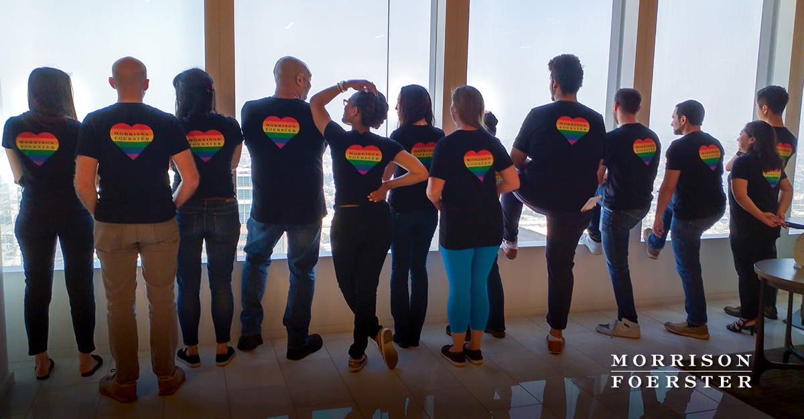

Although New York was the city chosen to host the 5th annual WorldPride celebration, MoFo offices all around the world showed that Pride is truly universal. This year’s WorldPride coincided with the 50th anniversary of the Stonewall Uprising, considered to be one of the most significant events in the battle for gay liberation and LGBTQ+ rights in the United States.
From Tokyo to San Francisco, MoFo staff and attorneys around the globe gathered to celebrate LGBTQ+ history, culture, and politics in big and small ways. They marched in parades, raced dragon boats, spoke on and attended panel discussions and presentations, connected during office happy hours, and even attended concerts and shows.
While June is the month dedicated to celebrating Pride in the United States, attorneys and staff from MoFo’s Tokyo office marched in the Tokyo Rainbow Pride Parade on April 28 to kickoff Tokyo’s Gay Pride Week. John Smith, co-head of MoFo’s National Security practice, also visited Tokyo during Pride Month to share his experience as an openly LGBTQ+ professional in the financial services space and as a top law enforcement official. John was also featured in the Pride Q&A series, which ran throughout the month of June on our MoFo+ blog and social media channels.
In Hong Kong, over twenty lawyers and staff came together to represent MoFo and our commitment to diversity at the annual Hong Kong Dragon Boat Festival. Hong Kong trainee solicitor Keyon Lo was also selected as a feature artist in the annual Arcus Pride Art exhibition, one of the largest corporate supported exhibitions of work by LGBTQ+ artists and supporters. You can learn more about MoFo Asia’s commitment to diversity and the LGBTQ+ community here.
In the U.S., MoFo’s West Coast offices kicked off the month by hosting Out Leadership Quorum’s Board Fit Workshop on June 6. MoFo partner and co-chair of the Social Enterprise and Impact Investing Group Fredo Silva provided some great insights during the “What Boards Look For” panel. On June 8, members of the San Francisco LGBTQ+ affinity group attended the Pride Law Fund Annual Bay Cruise, and on June 9, our Los Angeles LGBTQ+ affinity group joined the Lambda Legal Pride Parade, marching down Santa Monica Boulevard in West Hollywood to celebrate the theme “Just Unite.”
Later in June, historian Jim Van Buskirk visited the San Francisco office to present “San Francisco: Chronicling the Century Before Stonewall.” Additional discussions in the San Francisco office included a presentation by LGBT Asylum Project Executive Director Okan Sengun and a panel discussion during which MoFo’s Adam Brauner (also featured in our Pride Month Q&A series) and Matt Malone sat down with Lambda Legal’s Peter Renn to talk about the writs granted by the Supreme Court to hear three cases regarding the rights of LGBTQ+ employees under current federal law. MoFo Palo Alto also hosted a lunch presentation on “Diversity in Action – What Pride Means to Us” with Chief Operating Officer of Silicon Valley Pride Nicole Altamirano and President of the Billy DeFrank LGBTQ+ Community Center Gabrielle Antolovich.
Meanwhile, on the East Coast, MoFo’s New York office hosted a conversation with current Stonewall Inn co-owner and organizer of NYC Pride and WorldPride Stacy Lentz. The long-time LGBTQ+ rights activist discussed the history of Stonewall, its impact on the push for LGBTQ+ rights, and its enduring influence as the struggle for those rights continues and evolves. On June 13, the New York LGBTQ+ Group attended NO BAR’s “Minna Tea Dance with Milk and Detox,” featuring a drag show with contestants from RuPaul’s Drag Race at The Standard in New York’s East Village. Other members of the group attended a makeup show for “BenDeLaCreme Is…Ready to Be Committed” at the Laurie Beechman Theatre on June 23.
Keeping the entertainment going, MoFo reserved two suites at the WorldPride Opening Ceremony at the Barclays Center in Brooklyn, New York for members of our LGBTQ+ affinity groups and diverse summer associates. The concert, hosted by the hilarious Whoopi Goldberg, featured performances by Cyndi Lauper, Billy Porter, Chaka Kahn, and Todrick Hall, among many others, and benefitted three leading LGBTQ+ organizations: SAGE, the Ali Forney Center, and Immigration Equality.
A number of MoFo offices, including Washington, D.C., New York, Palo Alto, San Francisco, Los Angeles and London, hosted in-office gatherings, such as the pre-Pride Parade breakfast in San Francisco. Across the pond, London’s LGBTQ+ Affinity Group hosted their Pride-themed breakfast in honor of London Pride on July 6. There were numerous happy hours featuring live entertainment and giveaways for staff and attorneys. No matter where or how we celebrated Pride, one thing was constant — all were welcome, a sentiment that MoFo lives by all year round.
Learn more about MoFo’s commitment to diversity, inclusion, and the LGBTQ+ community here.
Scroll to see pictures of MoFo’s Pride events from around the world.